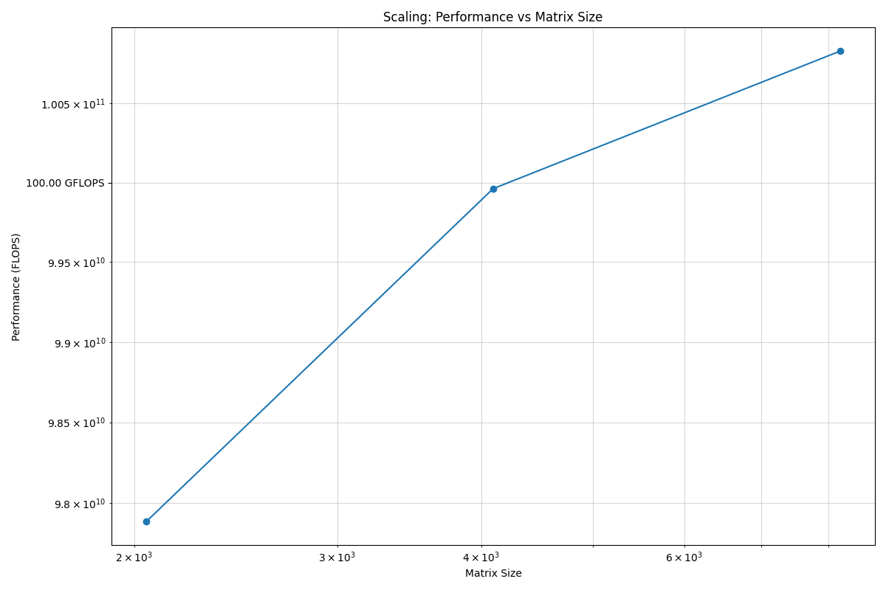
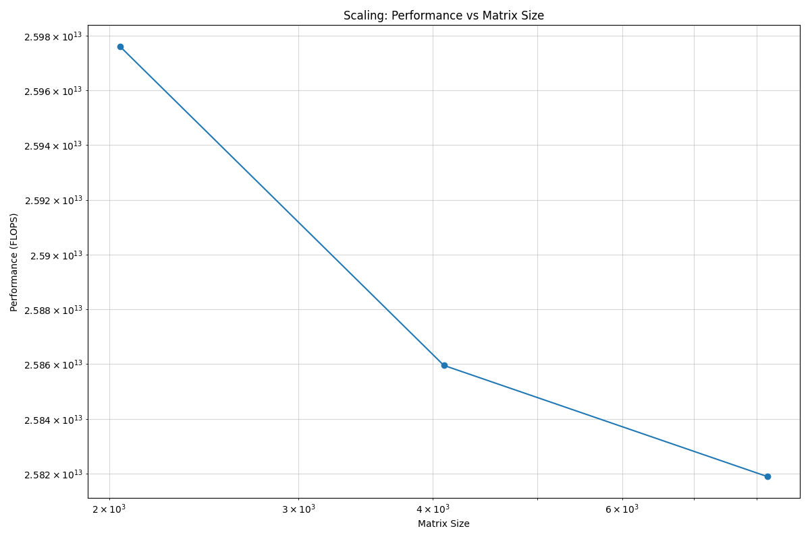
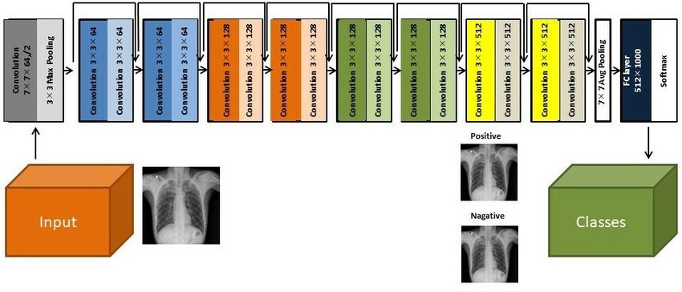
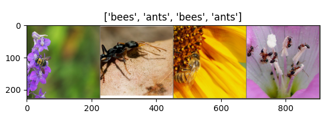
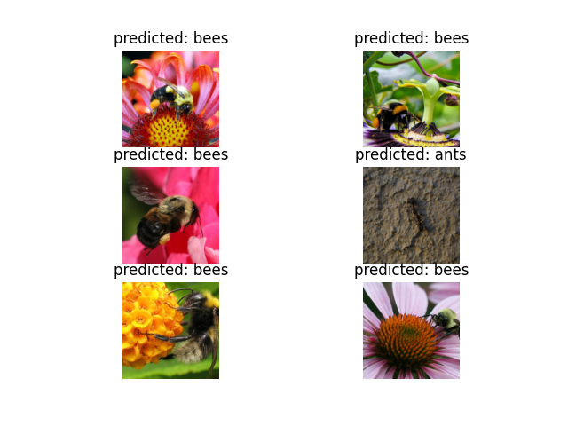
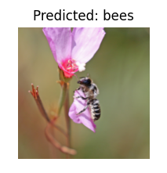

Running Containers on HPC Systems
High performance computing (HPC) systems serve a large role in academic computing at scale. In this portion of the training, we will explore methods for running containers that you develop on HPC systems and also discovering containers built by the community that you can utilize. After going through this section, you should be able to:
Use Apptainer to execute Docker containers on a HPC system
Demonstrate how to run containers that use GPUs for computation
Discover community curated software containers available at TACC
Introduction to Apptainer
Note
- Prerequisites
This section uses the Vista compute cluster to run Apptainer. An active allocation on Vista is required, though most content will apply to any system that supports Apptainer.
At face value, Apptainer is an alternative container implementation to Docker that has an overlapping set of features but some key differences as well. Apptainer is commonly available on shared clusters, such as TACC’s HPC systems, because the Docker runtime is not secure on systems where users are not allowed to have “escalated privileges”. Importantly, the Apptainer runtime is compatible with Docker containers! So in general, we follow the practice of using Docker to develop containers and using Apptainer simply as a runtime to execute containers on HPC systems.
If you are familiar with Docker, Apptainer will feel familiar.
Login to Vista
For today’s training, we will use the Vista supercomputer. To login, you need to establish a SSH connection from your laptop to the Vista system. Instructions depend on your laptop’s operating system.
Mac / Linux (Use Terminal)
Open the application ‘Terminal’ and:
[local]$ ssh username@vista.tacc.utexas.edu
To access the system:
1) If not using ssh-keys, please enter your TACC password at the password prompt
2) At the TACC Token prompt, enter your 6-digit code followed by <return>.
(enter password)
(enter 6-digit token)
Windows (Use WSL2 or an SSH Client)
Open the application WSL2 :
[local]$ ssh username@vista.tacc.utexas.edu
To access the system:
1) If not using ssh-keys, please enter your TACC password at the password prompt
2) At the TACC Token prompt, enter your 6-digit code followed by <return>.
(enter password)
(enter 6-digit token)
Or open an SSH client like PuTTY:
Open the application 'PuTTY'
enter Host Name: vista.tacc.utexas.edu
(click 'Open')
(enter username)
(enter password)
(enter 6-digit token)
When you have successfully logged in, you should be greeted with some welcome text and a command prompt.
Set Up Your Environment
In order to achieve faster pulls and avoid too much strain on the $WORK filesystem, we will set
up a cache directory for Apptainer on $SCRATCH. Either run this every time you login, or add it
to your .bashrc file so it is done automatically:
[vista]$ export APPTAINER_CACHEDIR=$SCRATCH/apptainer_cache
Start an Interactive Session
The Apptainer module is currently only available on compute nodes at TACC. To use Apptainer interactively,
start an interactive session on a compute node using the idev command.
[vista]$ idev -m 40
If prompted to use a reservation, choose yes. Once the command runs successfully, you will no longer be on a login node, but instead have a shell on a dedicated compute node.
Load the Apptainer Module
By default, the apptainer command is not visible, but it can be added to the environment by loading
the module.
[gh]$ module list
[gh]$ module spider apptainer
[gh]$ module load tacc-apptainer
[gh]$ module list
Now the apptainer command is available.
[gh]$ type apptainer
[gh]$ apptainer help
Core Apptainer Commands
Pull a Docker Container
Containers in the Docker registry may be downloaded and used, assuming the underlying architecture (e.g. x86) is the same between the container and the host.
[gh]$ apptainer pull docker://eriksf/lolcow
[gh]$ ls
There may be some warning messages, but this command should download the latest version of the
“lolcow” container and save it in your current working directory as lolcow_latest.sif.
Interactive Shell
The shell command allows you to spawn a new shell within your container and interact with it
as though it were a small virtual machine.
[gh]$ apptainer shell lolcow_latest.sif
Apptainer>
The change in prompt indicates that you have entered the container (though you should not rely on that to determine whether you are in container or not).
Once inside of an Apptainer container, you are the same user as you are on the host system. Also, a number of host directories are mounted by default.
Apptainer> whoami
Apptainer> id
Apptainer> pwd
Apptainer> exit
Note
Docker and Apptainer have very different conventions around how host directories are mounted within the container. In many ways, Apptainer has a simpler process for working with data on the host, but it is also more prone to inadvertantly having host configurations “leak” into the container.
Run a Container’s Default Command
Just like with Docker, Apptainer can run the default “entrypoint” or default command of a container with
the run subcommand. These defaults are defined in the Dockerfile (or Apptainer Definition file) that
define the actions a container should perform when someone runs it.
[gh]$ apptainer run lolcow_latest.sif
________________________________________
< The time is right to make new friends. >
----------------------------------------
\ ^__^
\ (oo)\_______
(__)\ )\/\
||----w |
|| ||
Note
You may receive a warning about “Setting locale failed”. This is because, by default, Apptainer sets all shell environment variables inside the container to match whatever is on the host. To override this behavior, add the --cleanenv argument to your command.
Executing Arbitrary Commands
The exec command allows you to execute a custom command within a container. For instance, to execute
the cowsay program within the lolcow_latest.sif container:
[gh]$ apptainer exec --cleanenv lolcow_latest.sif cowsay Apptainer runs Docker containers on HPC systems
_______________________________________
/ Apptainer runs Docker containers on \
\ HPC systems /
---------------------------------------
\ ^__^
\ (oo)\_______
(__)\ )\/\
||----w |
|| ||
Note
exec also works with the library://, docker://, and shub:// URIs. This creates an ephemeral container that executes a command and disappears.
Once you are finished with your interactive session, you can end it and return to the login node with the exit command:
[gh]$ exit
Apptainer in HPC Environments
Conducting analyses on high performance computing clusters happens through very different patterns of interaction than running analyses on a VM or on your own laptop. When you login, you are on a node that is shared with lots of people. Trying to run jobs on that node is not “high performance” at all. Those login nodes are just intended to be used for moving files, editing files, and launching jobs.
Most jobs on a HPC cluster are neither interactive, nor realtime. When you submit a job to the scheduler, you must tell it what resources you need (e.g. how many nodes, what type of nodes) and what you want to run. Then the scheduler finds resources matching your requirements, and runs the job for you when it can.
For example, if you want to run the command:
apptainer exec docker://python:latest /usr/local/bin/python --version
On a HPC system, your job submission script would look something like:
#!/bin/bash
#SBATCH -J myjob # Job name
#SBATCH -o output.%j # Name of stdout output file (%j expands to jobId)
#SBATCH -p gh # Queue name
#SBATCH -N 1 # Total number of nodes requested (56 cores/node)
#SBATCH -n 1 # Total number of mpi tasks requested
#SBATCH -t 02:00:00 # Run time (hh:mm:ss) - 4 hours
#SBATCH --reservation <my_reservation> # a reservation only active during the training
module load tacc-apptainer
export APPTAINER_CACHEDIR=$SCRATCH/apptainer_cache
apptainer exec docker://python:latest /usr/local/bin/python --version
This example is for the Slurm scheduler, a popular one used by all TACC systems. Each of the #SBATCH lines looks like a comment to the bash kernel, but the scheduler reads all those lines to know what resources to reserve for you.
Note
Every HPC cluster is a little different, but they almost universally have a “User’s Guide” that serves both as a quick reference for helpful commands and contains guidelines for how to be a “good citizen” while using the system. For TACC’s Vista system, the user guide is at: https://docs.tacc.utexas.edu/hpc/vista/
How do HPC Systems Fit into the Development Workflow?
A couple of things to consider when using HPC systems:
Using ‘sudo’ is not allowed on HPC systems, and building an Apptainer container from scratch requires sudo. That means you have to build your containers on a different development system, which is why we started this course developing Docker on your own laptop). You can pull a docker image on HPC systems.
If you need to edit text files, command line text editors don’t support using a mouse, so working efficiently has a learning curve. There are text editors that support editing files over SSH. This lets you use a local text editor and just save the changes to the HPC system.
In general, most TACC staff that work with containers develop their code locally and then deploy their containers to HPC systems to do analyses at scale. If the containers are written in a way that accommodates the small differences between the Docker and Apptainer runtimes, the transition is fairly seamless.
Differences between Docker and Apptainer
Host Directories
Docker: None by default. Use -v <source>:<destination> to mount a source host directory to an arbitrary destination within the container.
Apptainer: Mounts your current working directory, $HOME directory, and some system directories by default. Other defaults may be set in a system-wide configuration. The --bind flag is supported but rarely used in practice.
User ID
Docker: Defined in the Dockerfile, but containers run as root unless a different user is defined or specified on the command line. This user ID only exists within the container, and care must be taken when working with files on the host filesystem to make sure permissions are set correctly.
Apptainer: Containers are run in “userspace”, so you are the same user and user ID both inside and outside the container.
Image Format
Docker: Containers are stored in layers and managed in a repository by Docker. The docker images command will show you what containers are on your local machine and images are always referenced by their repository and tag name.
Apptainer: Containers are files. Apptainer can build a container on the fly if you specify a repository, but ultimately they are stored as individual files, with all the benefits and dangers inherent to files.
Running a Batch Job on Vista
If you are not already, please login to the Vista system, just like we did at the start of the previous section. You should be on one of the login nodes of the system.
We will not be editing much text directly on Vista, but we need to do a little. If you have a text
editor you prefer, use it for this next part. If not, the nano text editor is probably the most
accessible for those new to Linux.
Create a file called “pi.slurm” on the work filesystem:
[vista]$ cd $WORK
[vista]$ mkdir life-sciences-ml-at-tacc
[vista]$ cd life-sciences-ml-at-tacc
[vista]$ nano classify.slurm
Those commands should open a new file in the nano editor. Either type in (or copy and paste) the following Slurm script.
#!/bin/bash
#SBATCH -J classify-image # Job name
#SBATCH -o output.%j # Name of stdout output file (%j expands to jobId)
#SBATCH -p gh # Queue name
#SBATCH -N 1 # Total number of nodes requested (56 cores/node)
#SBATCH -n 1 # Total number of mpi tasks requested
#SBATCH -t 00:10:00 # Run time (hh:mm:ss)
#SBATCH --reservation <my_reservation> # a reservation only active during the training
module load tacc-apptainer
export APPTAINER_CACHEDIR=$SCRATCH/apptainer_cache
cd $SCRATCH
echo "running the lolcow container:"
apptainer run docker://eriksf/lolcow:latest
echo "grabbing image dog.jpg:"
wget https://raw.githubusercontent.com/TACC/life_sciences_ml_at_tacc/main/docs/section4/images/dog.jpg
echo "classify image dog.jpg:"
apptainer exec --nv docker://USERNAME/image-classifier:0.1 image_classifier.py dog.jpg
Don’t forget to replace
USERNAMEwith your DockerHub username! If you didn’t publish an image-classifier container from the previous sections, you are welcome to use “eriksf” as the username to pull my container.If you have more than one allocation, you will need to add another line specifying what allocation to use, such as:
#SBATCH -A AllocationName
Once you are done, try submitting this file as a job to Slurm.
[vista]$ sbatch classify.slurm
You can check the status of your job with the command showq -u.
Once your job has finished, take a look at the output:
[vista]$ cat output*
Apptainer and GPU Computing
Apptainer fully supports GPU utilization by exposing devices at runtime with the --nv flag.
This is similar to nvidia-docker, so all docker containers with libraries that are compatible with
the drivers on our systems can work as expected.
As a base, we recommend starting with the official CUDA (nvidia/cuda) images from NVIDIA on Docker Hub. If you specifically want to use PyTorch or Tensorflow then the official repositories on Docker Hub, pytorch/pytorch (x86_64) and tensorflow/tensorflow (x86_64) respectively, are good starting points.
Alternatively, the NVIDIA GPU Cloud (NGC) has a large number of pre-built containers for deep learning and HPC applications including PyTorch and Tensorflow (full-featured, large, and include ARM64/aarch64 versions).
For instance, we can use a tool like gpustat to poke at the GPU on TACC systems as follows:
Work from a compute node
[vista]$ idev -m 60 -p gh
Load the apptainer module
[gh]$ module load tacc-apptainer
Pull your image
[gh]$ apptainer pull docker://eriksf/monitor-gpu:0.1.0
Test the GPU
[gh]$ apptainer exec --nv monitor-gpu_0.1.0.sif gpustat --json
INFO: squashfuse not found, will not be able to mount SIF or other squashfs files
INFO: gocryptfs not found, will not be able to use gocryptfs
INFO: Converting SIF file to temporary sandbox...
{
"hostname": "c608-151.vista.tacc.utexas.edu",
"driver_version": "560.35.03",
"query_time": "2025-04-09T13:44:37.312641",
"gpus": [
{
"index": 0,
"uuid": "GPU-6248a92d-df2d-db15-af4e-b0e000650adb",
"name": "NVIDIA GH200 120GB",
"temperature.gpu": 27,
"fan.speed": null,
"utilization.gpu": 0,
"utilization.enc": 0,
"utilization.dec": 0,
"power.draw": 78,
"enforced.power.limit": 900,
"memory.used": 0,
"memory.total": 97871,
"processes": []
}
]
}
INFO: Cleaning up image...
Note
If this resulted in an error and the GPU was not detected, and you are on a GPU-enabled compute node, you may have excluded the --nv flag.
As previously mentioned, the main requirement for GPU-enabled containers to work is that the version of the NVIDIA host driver on the system supports the version of the CUDA library inside the container.
For some more exciting examples, lets look at two of the most popular Deep Learning frameworks for Python, Tensorflow and PyTorch.
First, we’ll run a simple script (tf_test.py) that uses Tensorflow to show the GPUs and then creates two tensors and multiplies them together. It can be tested as follows:
Change to your $SCRATCH directory
[gh]$ cd $SCRATCH
Download the test code
[gh]$ wget https://raw.githubusercontent.com/TACC/life_sciences_ml_at_tacc/main/docs/section4/files/tf_test.py
Pull the image
[gh]$ apptainer pull docker://nvcr.io/nvidia/tensorflow:24.12-tf2-py3
Run the code
[gh]$ apptainer exec --nv tensorflow_24.12-tf2-py3.sif python tf_test.py 2>warnings.txt
Tensorflow version: 2.17.0
GPU available: True
GPUs:
Name: /physical_device:GPU:0 Type: GPU
TNA= tf.Tensor(
[[1. 2. 3.]
[4. 5. 6.]], shape=(2, 3), dtype=float32)
TNB= tf.Tensor(
[[1. 2.]
[3. 4.]
[5. 6.]], shape=(3, 2), dtype=float32)
TNAxTNB= tf.Tensor(
[[22. 28.]
[49. 64.]], shape=(2, 2), dtype=float32)
Note
If you would like avoid the wordy tensorflow warning messages, run the above command and
redirect STDERR to a file (i.e. 2>warnings.txt).
Next, we’ll look at another example of matrix multiplication using PyTorch (pytorch_matmul_scaling_test.py) where we’ll show how long it takes to multiply increasingly bigger matrices using both the CPU and GPU. It can be tested as follows:
Change to your $SCRATCH directory
[gh]$ cd $SCRATCH
Download the test code
[gh]$ wget https://raw.githubusercontent.com/TACC/life_sciences_ml_at_tacc/main/docs/section4/files/pytorch_matmul_scaling_test.py
Pull the image
[gh]$ apptainer pull docker://eriksf/pytorch-ml-container:0.2
Run the code against the CPU
[gh]$ apptainer exec --nv pytorch-ml-container_0.2.sif python3 pytorch_matmul_scaling_test.py --no-gpu
INFO: squashfuse not found, will not be able to mount SIF or other squashfs files
INFO: gocryptfs not found, will not be able to use gocryptfs
INFO: Converting SIF file to temporary sandbox...
PyTorch Matrix Multiplication Test for Large Matrices
PyTorch version: 2.5.1
Using device: cpu
Running test for matrix size: 2048x2048
Estimated memory requirement: 0.03 GB
Running test for matrix size: 4096x4096
Estimated memory requirement: 0.12 GB
Running test for matrix size: 8192x8192
Estimated memory requirement: 0.50 GB
Matrix Multiplication Test Results
┏━━━━━━━━━━━━━┳━━━━━━━━━━━━━━━━━━┳━━━━━━━━━━━━━━━━━━━━━━┳━━━━━━━━━━━━━━━┓
┃ Matrix Size ┃ Memory Size (GB) ┃ Computation Time (s) ┃ Performance ┃
┡━━━━━━━━━━━━━╇━━━━━━━━━━━━━━━━━━╇━━━━━━━━━━━━━━━━━━━━━━╇━━━━━━━━━━━━━━━┩
│ 2048x2048 │ 0.03 │ 0.1755 │ 97.88 GFLOPS │
│ 4096x4096 │ 0.12 │ 1.3749 │ 99.96 GFLOPS │
│ 8192x8192 │ 0.50 │ 10.9043 │ 100.83 GFLOPS │
└─────────────┴──────────────────┴──────────────────────┴───────────────┘
Scaling plot saved as 'scaling_plot.png'
INFO: Cleaning up image...
The script also produces a scaling plot:

Scaling plot for CPU
Run the code against the GPU
[gh]$ apptainer exec --nv pytorch-ml-container_0.2.sif python3 pytorch_matmul_scaling_test.py
INFO: squashfuse not found, will not be able to mount SIF or other squashfs files
INFO: gocryptfs not found, will not be able to use gocryptfs
INFO: Converting SIF file to temporary sandbox...
PyTorch Matrix Multiplication Test for Large Matrices
PyTorch version: 2.5.1
Using device: cuda
CUDA version: 12.4
GPU: NVIDIA GH200 120GB
GPU Memory: 95.00 GB
Running test for matrix size: 2048x2048
Estimated memory requirement: 0.03 GB
Running test for matrix size: 4096x4096
Estimated memory requirement: 0.12 GB
Running test for matrix size: 8192x8192
Estimated memory requirement: 0.50 GB
Matrix Multiplication Test Results
┏━━━━━━━━━━━━━┳━━━━━━━━━━━━━━━━━━┳━━━━━━━━━━━━━━━━━━━━━━┳━━━━━━━━━━━━━━┓
┃ Matrix Size ┃ Memory Size (GB) ┃ Computation Time (s) ┃ Performance ┃
┡━━━━━━━━━━━━━╇━━━━━━━━━━━━━━━━━━╇━━━━━━━━━━━━━━━━━━━━━━╇━━━━━━━━━━━━━━┩
│ 2048x2048 │ 0.03 │ 0.0007 │ 25.98 TFLOPS │
│ 4096x4096 │ 0.12 │ 0.0053 │ 25.86 TFLOPS │
│ 8192x8192 │ 0.50 │ 0.0426 │ 25.82 TFLOPS │
└─────────────┴──────────────────┴──────────────────────┴──────────────┘
Scaling plot saved as 'scaling_plot.png'
INFO: Cleaning up image...
The script also produces a scaling plot:

Scaling plot for GPU
Building a GPU Aware Container
In the previous couple of examples, we have used pre-built containers to test GPU capability. Here we are going to build a container to train a CNN for image classification using transfer learning with PyTorch.
Transfer learning is a technique where a model that has been trained on a large dataset (e.g. ImageNet) is used as a starting point for training a model on a smaller dataset. This is particularly useful when the smaller dataset is not large enough to train a model from scratch. The ImageNet dataset contains well over a million images and 1000 classes. There are 2 main approaches or scenarios used in transfer learning:
Feature Extraction: Use the pre-trained model as a fixed feature extractor. In this case, we freeze all the layers of the pre-trained model and only train the final classification layer.
Fine-tuning: Unfreeze some of the layers of the pre-trained model and jointly train the model on the new dataset.
In this example, we will train a model to classify hymenoptera (ants, bees, and wasps) using the dataset located here. This dataset contains a training set of approximately 120 images each of ants and bees, and a validation set of approximately 75 images each. Again, too small and specific to train a model from scratch, but well placed to use for transfer learning. The model we will use is a pre-trained ResNet18 [1] model, which is a convolutional neural network (CNN) that has been trained on the ImageNet dataset. The ResNet18 model is a deep residual network with 18 layers that is designed to learn features from images. The model is available in the torchvision library, which is a package that provides popular datasets, model architectures, and common image transformations for computer vision.


On your local laptop or VM, clone the following repository:
[local]$ git clone https://github.com/eriksf/pytorch-transfer-learning.git
Let’s take a look at the files:
[local]$ cd pytorch-transfer-learning
[local]$ tree .
.
├── Dockerfile
├── images
│ ├── silver-tailed_petalcutter_bee.jpg
│ └── sri_lankan_relic_ant.jpeg
├── LICENSE
├── pyproject.toml
├── pytorch_transfer_learning
│ ├── __init__.py
│ ├── functions.py
│ ├── predict.py
│ ├── train.py
│ └── version.py
├── README.md
└── uv.lock
3 directories, 12 files
This is the basic directory structure of a Python package. It was built using uv
which is a tool for building and managing Python packages, and Click
which is a module for creating command line interfaces. When installed, this package will create two command line
interfaces: train and predict. The train command will train the model, and the predict command will
use the trained model to make predictions on new images.
The important file that controls the package and dependencies is pyproject.toml.
[local]$ cat pyproject.toml
[project]
name = "pytorch-transfer-learning"
version = "0.1.1"
description = "A tool to train a CNN for image classification using transfer learning (from https://pytorch.org/tutorials/beginner/transfer_learning_tutorial.html)"
authors = [{ name = "Erik Ferlanti", email = "eferlanti@tacc.utexas.edu" }]
requires-python = ">=3.12"
readme = "README.md"
dependencies = [
"torch",
"torchvision",
"scipy>=1.15.2,<2",
"matplotlib>=3.10.1,<4",
"rich>=13.9.4,<14",
"click>=8.1.8,<9",
"click-loglevel>=0.6.0,<0.7",
]
[project.urls]
repository = "https://github.com/eriksf/pytorch-transfer-learning"
[project.scripts]
train = "pytorch_transfer_learning.train:main"
predict = "pytorch_transfer_learning.predict:main"
[dependency-groups]
dev = [
"pytest>=8.3.5,<9",
"pytest-cov>=6.0.0,<7",
"ruff>=0.11.1,<0.12",
]
[tool.uv]
[tool.uv.sources]
torch = [
{ url = "https://download.pytorch.org/whl/cpu/torch-2.6.0-cp312-none-macosx_11_0_arm64.whl", marker = "sys_platform == 'darwin'" },
{ url = "https://download.pytorch.org/whl/cu126/torch-2.6.0%2Bcu126-cp312-cp312-linux_aarch64.whl", marker = "sys_platform == 'linux' and platform_machine == 'aarch64'" },
{ url = "https://download.pytorch.org/whl/cu126/torch-2.6.0%2Bcu126-cp312-cp312-manylinux_2_28_x86_64.whl", marker = "sys_platform == 'linux' and platform_machine == 'x86_64'" },
]
torchvision = [
{ url = "https://download.pytorch.org/whl/cpu/torchvision-0.21.0-cp312-cp312-macosx_11_0_arm64.whl", marker = "sys_platform == 'darwin'" },
{ url = "https://download.pytorch.org/whl/cu126/torchvision-0.21.0-cp312-cp312-linux_aarch64.whl", marker = "sys_platform == 'linux' and platform_machine == 'aarch64'" },
{ url = "https://download.pytorch.org/whl/cu126/torchvision-0.21.0%2Bcu126-cp312-cp312-linux_x86_64.whl", marker = "sys_platform == 'linux' and platform_machine == 'x86_64'" },
]
[tool.hatch.build.targets.sdist]
include = ["pytorch_transfer_learning"]
[tool.hatch.build.targets.wheel]
include = ["pytorch_transfer_learning"]
[tool.bumpversion]
current_version = "0.1.1"
parse = "(?P<major>\\d+)\\.(?P<minor>\\d+)\\.(?P<patch>\\d+)"
serialize = ["{major}.{minor}.{patch}"]
search = "{current_version}"
replace = "{new_version}"
regex = false
ignore_missing_version = false
ignore_missing_files = false
tag = false
sign_tags = false
tag_name = "v{new_version}"
tag_message = "Bump version: {current_version} → {new_version}"
allow_dirty = true
commit = false
message = "Bump version: {current_version} → {new_version}"
moveable_tags = []
commit_args = ""
setup_hooks = []
pre_commit_hooks = []
post_commit_hooks = []
[[tool.bumpversion.files]]
filename = "pytorch_transfer_learning/version.py"
[build-system]
requires = ["hatchling"]
build-backend = "hatchling.build"
[tool.ruff]
exclude = [".git", ".ruff_cache", ".vscode"]
line-length = 300
[tool.ruff.lint]
select = ["E", "F", "I"]
fixable = ["ALL"]
unfixable = ["F401"]
[tool.pytest.ini_options]
addopts = "--verbose --cov=pytorch_transfer_learning"
We show this file only to give some insight into how the Dockerfile will used to build the project. In this uv-based Python package, we’ll discuss each of the important Dockerfile sections in detail. As opposed to the previous section, this Dockerfile is a multi-stage build (see Multi-stage builds), which means that it will build the final image in multiple steps.
In stage 1 (base stage), we’re going to base our image on a tagged version
(12.6.3-cudnn-runtime-ubuntu24.04) of the official NVIDIA CUDA images, label it base, and then install
some system updates and Python 3.12 using apt, the package manager for Ubuntu/Debian.
FROM nvidia/cuda:12.6.3-cudnn-runtime-ubuntu24.04 AS base
# Install python and pip
RUN apt-get update \
&& DEBIAN_FRONTEND=noninteractive apt-get install -y \
python3.12-full \
python3-pip \
&& apt-get autoremove -y \
&& apt-get clean \
&& rm -rf /var/lib/apt/lists/*
Next, in the second stage (builder stage), we will copy in the uv executable, set the working directory (/app),
and use uv to install the Python dependencies listed in pyproject.toml. We will then copy in the project files
and use uv again to install the project.
FROM base AS builder
COPY --from=ghcr.io/astral-sh/uv:0.6.9 /uv /bin/uv
ENV UV_COMPILE_BYTECODE=1 UV_LINK_MODE=copy
WORKDIR /app
COPY uv.lock pyproject.toml /app/
RUN --mount=type=cache,target=/root/.cache/uv \
uv sync --frozen --no-install-project --no-dev
COPY images/ /app/images
COPY pytorch_transfer_learning /app/pytorch_transfer_learning
COPY LICENSE \
README.md \
/app/
RUN --mount=type=cache,target=/root/.cache/uv \
uv sync --frozen --no-dev
In the final stage (runtime stage), we will copy the /app directory from the builder stage, set the PATH
environment variable, run a Python command to prebuild the matplotlib font cache, and then set the default command
to run the help for the train command. The important thing to take away here is that we’re copying in the
/app directory from the builder stage, which contains all the files we need to run the project, and jettisoning
the rest of the build dependencies. This is a common pattern in multi-stage builds, where we want to keep the final
image as small as possible by only including the files we need to run the project.
FROM base
COPY --from=builder /app /app
ENV PATH="/app/.venv/bin:$PATH"
# Build matpotlib font cache
RUN MPLBACKEND=Agg python -c "import matplotlib.pyplot"
CMD [ "train", "--help" ]
For reference, here’s what the Dockerfile looks like in total:
FROM nvidia/cuda:12.6.3-cudnn-runtime-ubuntu24.04 AS base
# Install python and pip
RUN apt-get update \
&& DEBIAN_FRONTEND=noninteractive apt-get install -y \
python3.12-full \
python3-pip \
&& apt-get autoremove -y \
&& apt-get clean \
&& rm -rf /var/lib/apt/lists/*
FROM base AS builder
COPY --from=ghcr.io/astral-sh/uv:0.6.9 /uv /bin/uv
ENV UV_COMPILE_BYTECODE=1 UV_LINK_MODE=copy
WORKDIR /app
COPY uv.lock pyproject.toml /app/
RUN --mount=type=cache,target=/root/.cache/uv \
uv sync --frozen --no-install-project --no-dev
COPY images/ /app/images
COPY pytorch_transfer_learning /app/pytorch_transfer_learning
COPY LICENSE \
README.md \
/app/
RUN --mount=type=cache,target=/root/.cache/uv \
uv sync --frozen --no-dev
FROM base
COPY --from=builder /app /app
ENV PATH="/app/.venv/bin:$PATH"
# Build matpotlib font cache
RUN MPLBACKEND=Agg python -c "import matplotlib.pyplot"
CMD [ "train", "--help" ]
Now let’s go ahead and build the container. This will take a few minutes, so be patient.
[local]$ docker build -t <username>/pytorch-transfer-learning:0.1.0 .
Or for a different architecture (see Multi-architecture builds), you can use, for example, the following command:
[local]$ docker build --platform linux/arm64 -t <username>/pytorch-transfer-learning:0.1.0 .
Once you have successfully built the image, push it up to Docker Hub with the docker push command so that
we can pull it back down on an HPC system.
[local]$ docker push <username>/pytorch-transfer-learning:0.1.0
Testing the Container Locally with CPU
Before using TACC allocation hours, it’s a good idea to test the container locally. In this case, we can at least test that the program help works.
[local]$ docker run --rm <username>/pytorch-transfer-learning:0.1.0 train --help
Usage: train [OPTIONS]
Train a CNN for hymenoptera classification using transfer learning from the
pre-trained model ResNet18.
Options:
--version Show the version and exit.
--log-level [NOTSET|DEBUG|INFO|WARNING|ERROR|CRITICAL]
Set the log level [default: 20]
--log-file PATH Set the log file
--data-dir PATH Set the data directory [default:
hymenoptera_data]
--scenario [finetuning|fixedfeature]
Transfer learning scenario. [default:
finetuning]
--model-dir PATH Set the model directory [default: .]
--output-dir PATH Set the output directory [default: .]
--epochs INTEGER The number of epochs to train the model
[default: 25]
--help Show this message and exit.
We could also test the training process (or prediction) locally, because it will work on the CPU, but very slowly. However, we will not do that here because it would take a long time (25-30 minutes to train). Instead, we will run the training on the Vista system, which has powerful GPUs.
Running the Container on Vista
To start, let’s allocate a single Grace Hopper node, which has a single NVIDIA GH200 GPU with 95 GB of Memory.
[vista]$ idev -m 60 -p gh
Once you have your node, pull the image and run it as follows:
Load apptainer module
[gh]$ module load tacc-apptainer
Change to $SCRATCH directory
[gh]$ cd $SCRATCH
Pull the image
[gh]$ apptainer pull docker://<username>/pytorch-transfer-learning:0.1.0
Grab the hymenoptera dataset
[gh]$ wget https://download.pytorch.org/tutorial/hymenoptera_data.zip
[gh]$ unzip hymenoptera_data.zip
Run the container
[gh]$ apptainer exec --nv pytorch-transfer-learning_0.1.0.sif train --data-dir hymenoptera_data
INFO: squashfuse not found, will not be able to mount SIF or other squashfs files
INFO: gocryptfs not found, will not be able to use gocryptfs
INFO: Converting SIF file to temporary sandbox...
Training a CNN for hymenoptera classification using transfer learning
PyTorch version: 2.6.0+cu126
Using device: cuda:0
CUDA version: 12.6
GPU: NVIDIA GH200 120GB
GPU Memory: 95.00 GB
Data directory: hymenoptera_data
Dataset sizes: {'train': 244, 'val': 153}
Classes: ['ants', 'bees']
Transfer learning scenario: finetuning
Example training data grid saved to './test_grid.png'
Epoch 0/24
----------
train Loss: 0.6110 Acc: 0.7336
val Loss: 0.2670 Acc: 0.8954
Epoch accuracy is better than current best, saving model...
Epoch 1/24
----------
train Loss: 0.4454 Acc: 0.7951
val Loss: 0.2542 Acc: 0.8693
Epoch 2/24
----------
train Loss: 0.3719 Acc: 0.8361
val Loss: 0.4829 Acc: 0.7908
Epoch 3/24
----------
train Loss: 0.4174 Acc: 0.8525
val Loss: 0.5096 Acc: 0.8105
Epoch 4/24
----------
train Loss: 0.4799 Acc: 0.8238
val Loss: 0.3103 Acc: 0.8758
Epoch 5/24
----------
train Loss: 0.6708 Acc: 0.7664
val Loss: 0.2981 Acc: 0.8889
Epoch 6/24
----------
train Loss: 0.3612 Acc: 0.8730
val Loss: 0.6696 Acc: 0.7516
Epoch 7/24
----------
train Loss: 0.3977 Acc: 0.8074
val Loss: 0.2333 Acc: 0.9216
Epoch accuracy is better than current best, saving model...
Epoch 8/24
----------
train Loss: 0.2202 Acc: 0.9057
val Loss: 0.2097 Acc: 0.9412
Epoch accuracy is better than current best, saving model...
Epoch 9/24
----------
train Loss: 0.3133 Acc: 0.8648
val Loss: 0.2120 Acc: 0.9477
Epoch accuracy is better than current best, saving model...
Epoch 10/24
----------
train Loss: 0.2501 Acc: 0.8852
val Loss: 0.2218 Acc: 0.9477
Epoch 11/24
----------
train Loss: 0.3130 Acc: 0.8730
val Loss: 0.2195 Acc: 0.9346
Epoch 12/24
----------
train Loss: 0.3436 Acc: 0.8361
val Loss: 0.2296 Acc: 0.9085
Epoch 13/24
----------
train Loss: 0.2763 Acc: 0.8566
val Loss: 0.2455 Acc: 0.9085
Epoch 14/24
----------
train Loss: 0.2794 Acc: 0.8811
val Loss: 0.2098 Acc: 0.9477
Epoch 15/24
----------
train Loss: 0.2356 Acc: 0.9016
val Loss: 0.2074 Acc: 0.9412
Epoch 16/24
----------
train Loss: 0.2779 Acc: 0.8811
val Loss: 0.2045 Acc: 0.9281
Epoch 17/24
----------
train Loss: 0.2848 Acc: 0.8566
val Loss: 0.2068 Acc: 0.9477
Epoch 18/24
----------
train Loss: 0.2334 Acc: 0.9098
val Loss: 0.2059 Acc: 0.9477
Epoch 19/24
----------
train Loss: 0.2054 Acc: 0.8934
val Loss: 0.1988 Acc: 0.9412
Epoch 20/24
----------
train Loss: 0.2842 Acc: 0.8607
val Loss: 0.2105 Acc: 0.9412
Epoch 21/24
----------
train Loss: 0.3721 Acc: 0.8525
val Loss: 0.2380 Acc: 0.9150
Epoch 22/24
----------
train Loss: 0.2626 Acc: 0.8770
val Loss: 0.2290 Acc: 0.9085
Epoch 23/24
----------
train Loss: 0.2616 Acc: 0.8934
val Loss: 0.2280 Acc: 0.9281
Epoch 24/24
----------
train Loss: 0.2375 Acc: 0.8934
val Loss: 0.2227 Acc: 0.9150
----------
Training complete in 0m 35s
Best val Acc: 0.947712
Prediction image for 'finetuning' model saved to './resnet18-finetuned_predictions.png'
Model saved to './hymenoptera-finetuning.pt'
INFO: Cleaning up image...
Before the training started, the script created a grid of the training images and saved it to test_grid.png.

Example training data grid
After the training was complete, the script saved the model to hymenoptera-finetuning.pt and created a
prediction image for the validation set and saved it to resnet18-finetuned_predictions.png.

Prediction image for ‘finetuning’ model
Now that we have a trained model, we can use it to make predictions (run inference) on new images. The
predict command takes a single image as input and outputs the predicted class.
[gh]$ apptainer exec --nv pytorch-transfer-learning_0.1.0.sif predict --help
INFO: squashfuse not found, will not be able to mount SIF or other squashfs files
INFO: gocryptfs not found, will not be able to use gocryptfs
INFO: Converting SIF file to temporary sandbox...
Usage: predict [OPTIONS] IMAGE
Predict the class of a given image based on the CNN model trained by
transfer learning for hymenoptera classification.
Options:
--version Show the version and exit.
--log-level [NOTSET|DEBUG|INFO|WARNING|ERROR|CRITICAL]
Set the log level [default: 20]
--log-file PATH Set the log file
--model PATH Set the model [required]
--output-dir PATH Set the output directory [default: .]
--help Show this message and exit.
[gh]$ apptainer exec --nv pytorch-transfer-learning_0.1.0.sif predict --model hymenoptera-finetuning.pt /app/images/silver-tailed_petalcutter_bee.jpg
INFO: squashfuse not found, will not be able to mount SIF or other squashfs files
INFO: gocryptfs not found, will not be able to use gocryptfs
INFO: Converting SIF file to temporary sandbox...
Predict the class of an image based on the CNN trained for hymenoptera classification
PyTorch version: 2.6.0+cu126
Using device: cuda:0
CUDA version: 12.6
GPU: NVIDIA GH200 120GB
GPU Memory: 95.00 GB
Predicted class: bees
Predicted image saved to './hymenoptera-finetuning_prediction_silver-tailed_petalcutter_bee.png'
INFO: Cleaning up image...
This script also creates an image based on the prediction and saves it to hymenoptera-finetuning_prediction_silver-tailed_petalcutter_bee.png.

Predicted image for ‘silver-tailed_petalcutter_bee.png’
Additional Resources
The material in this section is based on the following resources: